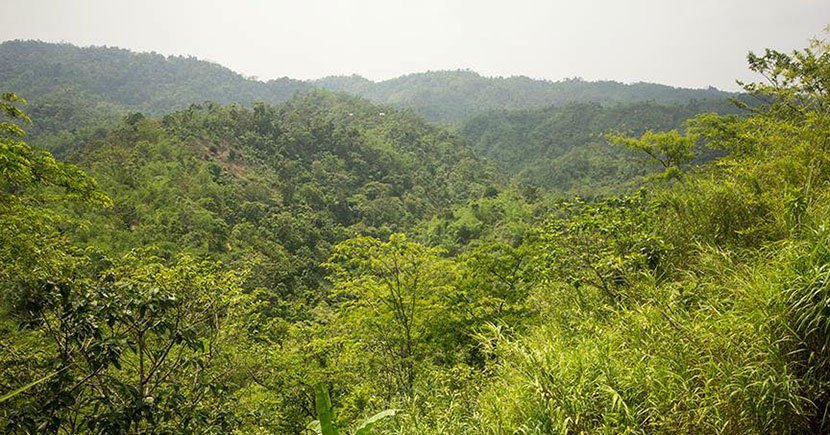
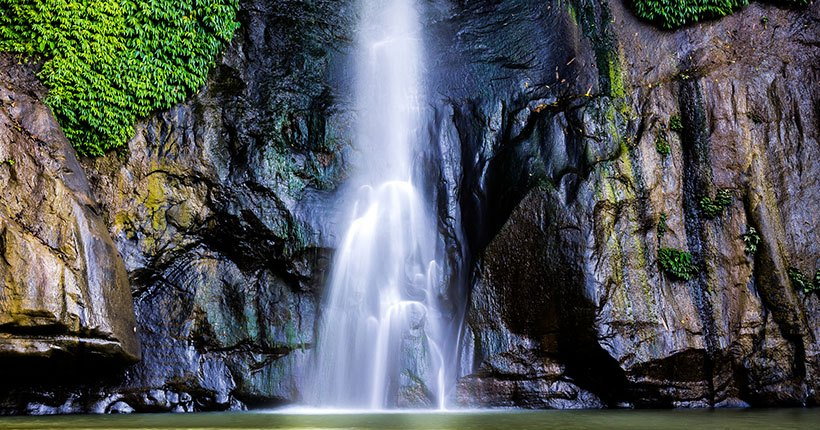
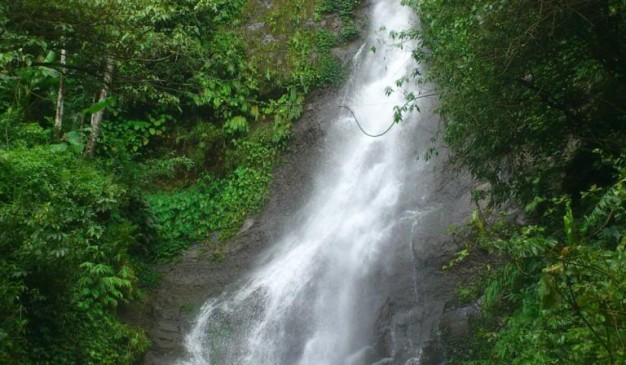
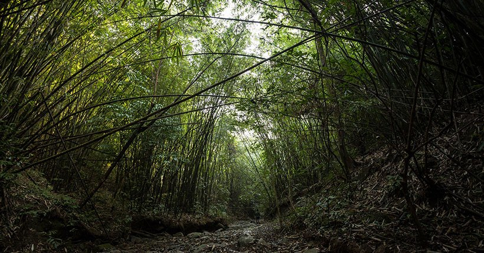
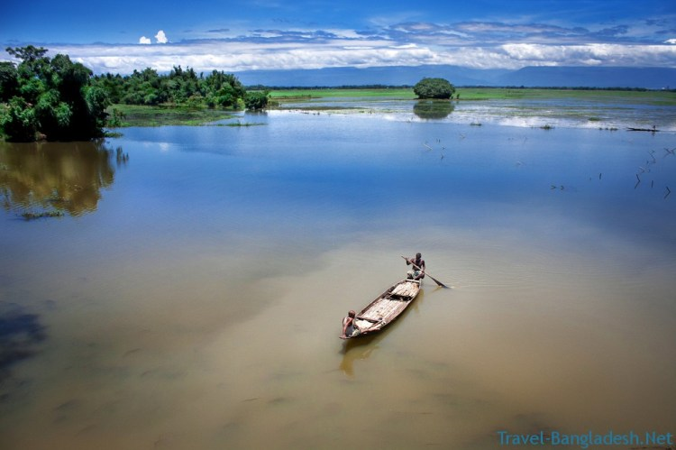

সিলেট
 পাথারিয়া পাহাড় মৌলভীবাজার জেলার বড়লেখা উপজেলায় অবস্থিত, যার পূর্ব নাম আদম আইল। এই পাহাড়ের উপর থেকে পতিত পানিতেই সৃষ্টি হয়েছে মাধবকুণ্ড জলপ্রপাত। এই পাহাড়, সিলেট সদর থেকে ৭২ কিলোমিটার, মৌলভীবাজার জেলা থেকে ৭০ কিলোমিটার, কুলাউড়া রেলওয়ে জংশন থেকে ৩২ কিলোমিটার এবং কাঁঠালতলী থেকে ৮ কিলোমিটার দূরত্বে অবস্থিত। পাথারিয়া পাহাড়ে আছে ঝেরঝেরি, কাখড়া ছড়ি, ফুল ঢালনি ঝেরঝেরি আর ইটাউরি ফুলবাগিচা ঝর্ণা। ঝর্ণাগুলোর এমন আহলাদি নাম দিয়েছেন স্থানীয় লোকজন। শুধু নামকরণেই আলাদা টান নেই। ঝর্ণাগুলো পাথারিয়া পাহাড়কে সাজিয়েছে অন্যরকম সৌন্দর্য্য। উঁচু-নিচু টিলা সবুজ বৃক্ষরাজিতে ছাওয়া পাহাড়ের বুক চিরে বেরিয়ে আসা প্রবাহমান পানি ছড়া দিয়ে সমতলে নেমে আসছে। ছড়ার পানি ছোট-বড় পাথরের ওপর দিয়ে বয়ে চলছে। দুর্গম এই ছড়া দিয়ে হেঁটে ঝরনার কাছে যেতে যত বিপত্তি ক্লান্তি আসুক না কেন, ছড়ার স্বচ্ছ শীতল পানি, চারদিকের সবুজ প্রকৃতি, বনফুল, শাসনি লেবুর সুবাস, পাখি ও ঝিঁ ঝিঁ পোকার কলতান সমস্ত ক্লান্তি দূর করে দেয়। প্রায় এক হাজার বছর আগে এই অঞ্চলটি গভীর অরণ্য দ্বারা পূর্ণ ছিলো এবং এখানে পাথরি নামক নাগা জনগোষ্ঠীর একটি উপশাখার অধিবাসীরা বসবাস করত। কালক্রমে বসবাসকারী জনগোষ্ঠীর নামের সাথে মিল থেকে এই অরণ্য অঞ্চলের নাম ‘পাথারিয়া’ হয়। এই পাহাড়টি ২৪ কিলোমিটার অঞ্চল জুড়ে বিস্তৃত। এটি বাংলাদেশের সাথে ভারতের পূর্ব দিকের সীমান্তবর্তী খাসিয়া-জয়ন্তীয়া উচ্চভূমির একটি বর্ধিত অংশ যার অপর অংশ ভারতের আসামে বিস্তৃত। পাথারিয়ার উঁচ্চচূড়া থেকে পার্শ্ববর্তী দেশ ভারতের করিমগঞ্জ জেলা দেখা যায়।এখানে পূর্বে প্রচুর কমলা লেবুর গাছ থাকলেও বর্তমানে তার সংখ্যা হ্রাস পেয়েছে। এই বনাঞ্চলটি আগর-আতর কাঠ গাছের জন্য বিখ্যাত। বর্তমানে এখানে যেসব প্রাকৃতিক উদ্ধিদ দেখা যায় তার মধ্যে রয়েছেঃ নাগকেশর, পালান, বাঁশ, বেত, কালাকস্তুরী বা মুশকদানা ও বনঢ্যাড়শ।
ঢাকা থেকে ট্রেনে এবং বাসে দুই মাধ্যমেই যাওয়া যায়। ট্রেনে যেতে চাইলে কমলাপুর থেকে সিলেটগামী আন্তঃনগর ট্রেনে কুলাউড়ায় নেমে তারপর বাসে অথবা সিএনজি নিয়ে বড়লেখায় নেমে ডিমাই হয়ে পাথারিয়ায় (Patharia Pahar) যেতে হবে। আর বাস সার্ভিসে যেতে হলে ফকিরাপুল-সায়েদাবাদ থেকে রূপসী বাংলা, শ্যামলী পরিবহন এবং মহাখালী থেকে এনা পরিবহনেও যেতে পারেন।
এখানে জেলা পরিষদের ২টি বাংলো ও ২টি আবাসিক হোটেল রয়েছে। তাছাড়া আপনি চাইলে সিলেট কিংবা মৌলভীবাজার শহরের হোটেলেও থাকতে পারেন।
 মাধবকুন্ড ঝর্ণা যা বাংলাদেশের সুউচ্চ জলপ্রপাত হিসেবে পরিচিত। সিলেট বিভাগের মৌলভীবাজার জেলার বড়লেখা নামক উপজেলায় এই সুন্দর নয়নাভিরাম জলপ্রপাতটির অবস্থান। একসময় পর্যটকদের কাছে প্রাকৃতিক জলপ্রপাত মানেই ছিলো মাধবকুন্ড। এখন দেশের ভেতরে আরো অনেক ঝর্ণার সন্ধান মিলেছে। তবে এখনো জলপ্রপাত অনুরাগী পর্যটকদের প্রধান আকর্ষন মাধবকুন্ড ঝর্ণা। পর্যটন কেন্দ্র হিসেবে দেশে-বিদেশে পরিচিত এই স্থানটিতে বাংলাদেশ পর্যটন কর্পোরেশনের রেস্টহাউজ ও রেস্টুরেন্ট নির্মাণ করা হয়েছে। এ ছাড়া সরকারি উদ্যোগে পুরো এলাকাটিকে ঘিরে তৈরি করা হচ্ছে মাধবকুণ্ড ইকোপার্ক। যে পাহাড়টির গা বেয়ে পানি গড়িয়ে পড়ছে এ পাহাড়টি সম্পূর্ণ পাথরের যা পাথারিয়া পাহাড় (পূর্বনাম: আদম আইল পাহাড়) নামে পরিচিত। এর বৃহৎ অংশজুড়ে রয়েছে ছড়া। এই পাহাড়ের উপর দিয়ে গঙ্গামারা ছড়া বহমান। এই ছড়া মাধবকুণ্ড জলপ্রপাত হয়ে নিচে পড়ে হয়েছে মাধবছড়া। অর্থাৎ গঙ্গামারা ছড়া হয়ে বয়ে আসা জলধারা [১২ অক্টোবর ১৯৯৯-এর হিসাবমতে] প্রায় ১৬২ ফুট উঁচু থেকে নিচে পড়ে মাধবছড়া হয়ে প্রবহমান। সাধারণত একটি মূল ধারায় পানি সব সময়ই পড়তে থাকে, বর্ষাকাল এলে মূল ধারার পাশেই আরেকটা ছোট ধারা তৈরি হয় এবং ভরা বর্ষায় দুটো ধারাই মিলেমিশে একাকার হয়ে যায় পানির তীব্র তোড়ে। জলের এই বিপুল ধারা পড়তে পড়তে নিচে সৃষ্টি হয়েছে বিরাট কুণ্ডের। এই মাধবছড়ার পানি পশ্চিম দিকে প্রবাহিত হতে হতে গিয়ে মিশেছে হাকালুকি হাওরে। মাধবকুন্ড ঝর্ণা থেকে ১৫-২০ মিনিটের হাটা দুরত্বে রয়েছে আরেকটি ঝর্ণা যা পরিকুন্ড ঝর্না নামে পরিচিত। মাধবকুন্ড ঝর্ণাতে আসার পথে চোখে পড়বে উঁচু নিচু পাহাড়ি টিলায় দিগন্তজোড়া চা বাগান। টিলার ভাঁজে ভাঁজে খাসিয়াদের পানপুঞ্জি ও জুম চাষ। মাধবকুন্ড ঝর্ণার (Madhobkundo Waterfall) পাশেই রয়েছে কমলা বাগান, চা, লেবু, সুপারি ও পানের বাগান। ফলে মাধবকুন্ড বেড়াতে গেলে সহজেই ঘুরে আসা যায় এসব বাগানে।
রাজধানী ঢাকার কমলাপুর ও ক্যান্টনমেন্ট রেলস্টেশন থেকে প্রতিদিন ৩টা ট্রেন ছাড়ে সিলেটের উদ্দেশ্যে। ট্রেন গুলোর মধ্যে আছে জয়ন্তিকা,পারাবত,উপবন। ট্রেনের ভাড়া প্রকার ভেদে ১২০ থেকে ৭০০ টাকা পর্যন্ত। আর সময় লাগবে ৭-৮ ঘণ্টা। ট্রেনে গেলে রাত ১০টার উপবন এক্সপ্রেসে যাওয়াটাই সবচেয়ে ভালো। কুলাউড়ায় এসে পৌছায় ভোর ৫ টায় ।কুলাউড়া থেকে মাধবকুন্ডের দূরত্ব প্রায় ৩৫ কি.মি ,আপনি এখান থেকে সিএনজি রিজার্ভ করে সরাসরি মাধবকুন্ড যেতে পারেন । ভাড়া পড়বে ২৫০-৩০০ টাকা । এছাড়া বাসেও যাওয়া যাবে। বাসে যেতে চাইলে অনেক বাস আছে। এর মধ্যে শ্যামলী, রূপসী বাংলা, হানিফ, সোহাগ, এনা,ইউনিক, উল্যেখযোগ্য। এছাড়াও আরো বিভিন্ন নামের একাধিক বাস রয়েছে, যেগুলো অপেক্ষাকৃত কম ভাড়ায় যাত্রী সেবা করে থাকে। ভোর থেকে শুরু করে রাত ১টা পর্যন্ত এসব বাস পাবেন। বাসে যেতে সময় লাগবে ৪ থেকে ৫ ঘন্টা।
এখানে জেলা পরিষদের ২টি বাংলো ও ২টি আবাসিক হোটেল রয়েছে। তাছাড়া আপনি চাইলে সিলেট কিংবা মৌলভীবাজার শহরের হোটেলেও থাকতে পারেন। সিলেটে থাকার মত অনেকগুলো হোটেল আছে,সিলেটে আপনি আপনার প্রোয়োজন ও সামর্থ অনুযায়ী যে কোন ধরনের হোটেল পাবেন। কয়েকটি পরিচিত হোটেল হল – হোটেল হিল টাউন, গুলশান, দরগা গেইট, সুরমা,কায়কোবাদ ইত্যাদি। লালা বাজার এলাকায় কম ভাড়ায় অনেক মানসম্মত রেস্ট হাউস আছে৷ হোটেল অনুরাগ – এ সিঙ্গেল রুম ৪০০টাকা (দুই জন আরামসে থাকতে পারবেন), তিন বেডের রুম ৫০০টাকা(নরমালই ৪জন থাকতে পারবেন)। রাত যাপনের জন্য দরগা রোডে বিভিন্ন মানের আবাসিক হোটেল রয়েছে। রুম ভাড়া ৫০০/- টাকা থেকে ৫০০০/- টাকা পর্যন্ত।
 মাধবকুন্ডের পাশে পরিকুণ্ড জলপ্রপাত টানবে সবাইকে। বেড়ানোর জায়গাটা যদি প্রকৃতির খুব কাছাকাছি হয়, তবে তো কথাই নেই। পরিকুণ্ড ঝর্ণা মৌলভীবাজার জেলার বড়লেখা উপজেলায় মাধবকুণ্ড জলপ্রপাতের নিকটে অবস্থিত। ‘মাধবকুণ্ড‘ জলপ্রপাত কমবেশি সবারই চেনা। তবে এর কাছেই যে আরেকটি জলপ্রপাত আছে, সেটা হয়ত অনেকেরই জানা নেই। স্থানীয় মানুষের কাছে এর নাম পরিকুন্ড ঝর্ণা। সবুজ পাহাড়ে ঘেরা এই জায়গাটি টানবে সবাইকে। মাধবকুন্ড ঝর্ণার চেয়ে পরিকুণ্ড কিছুটা নির্জন। বিভিন্ন প্রজাতির গাছপালায় ছেয়ে আছে এর চারপাশ। প্রায় ১৫০ ফুট উঁচু থেকে পাথরের খাড়া পাহাড় বেয়ে শোঁ শোঁ শব্দ করে জলধারা নিচে আছড়ে পড়ছে। নিচে বিছানো ছোট-বড় পাথর গড়িয়ে স্রোতধারা একটি বড় ছড়ায় মিশে গেছে। বড় একটি পাথরে বসে আনমনে খুব কাছ থেকেই জলপ্রপাতের নৈসর্গিক দৃশ্য উপভোগ করা যেতে পারে। ইচ্ছা করলে স্বচ্ছ পানির ছড়ায় ভালোমতো গোসলও সেরে নেওয়া যায়। যাঁরা মাধবকুণ্ডে বেড়াতে যেতে চান, তাঁরা চাইলেই পরিকুণ্ড দেখে আসতে পারেন।
পরিকুণ্ড যাওয়ার উত্তম সময় হচ্ছে বর্ষাকাল। এ সময় ঝর্ণা পানিতে পূর্ণ থাকে।
রাজধানী ঢাকার কমলাপুর ও ক্যান্টনমেন্ট রেলস্টেশন থেকে প্রতিদিন ৩টা ট্রেন ছাড়ে সিলেটের উদ্দেশ্যে। ট্রেন গুলোর মধ্যে আছে জয়ন্তিকা,পারাবত,উপবন। ট্রেনের ভাড়া প্রকার ভেদে ১২০ থেকে ৭০০ টাকা পর্যন্ত। আর সময় লাগবে ৭-৮ ঘণ্টা। ট্রেনে গেলে রাত ১০টার উপবন এক্সপ্রেসে যাওয়াটাই সবচেয়ে ভালো। কুলাউড়ায় এসে পৌছায় ভোর ৫ টায় ।কুলাউড়া থেকে মাধবকুন্ডের দূরত্ব প্রায় ৩৫ কি.মি ,আপনি এখান থেকে সিএনজি রিজার্ভ করে সরাসরি মাধবকুন্ড যেতে পারেন । ভাড়া পড়বে ২৫০-৩০০ টাকা । এছাড়া বাসেও যাওয়া যাবে। বাসে যেতে চাইলে অনেক বাস আছে। এর মধ্যে শ্যামলী, রূপসী বাংলা, হানিফ, সোহাগ, এনা,ইউনিক, উল্যেখযোগ্য। এছাড়াও আরো বিভিন্ন নামের একাধিক বাস রয়েছে, যেগুলো অপেক্ষাকৃত কম ভাড়ায় যাত্রী সেবা করে থাকে। ভোর থেকে শুরু করে রাত ১টা পর্যন্ত এসব বাস পাবেন। বাসে যেতে সময় লাগবে ৪ থেকে ৫ ঘন্টা। ননএসি ৩০০/৩৫০ টাকা। এসি ৯০০ টাকা পর্যন্ত। সরাসরি বাসে আসলে বড়লেখার একটু আগে “কাঠাঁলতলী” নামক জায়গায় নামবেন । এখান থেকে মাধবকুন্ড বেশি দূর নয় । তবে আপনাকে মাধবকুন্ড চূড়ার কাছে যেতে হলে এখান থেকে অবশ্যই সিএনজি বা রিক্সা নিতে হবে। জনপ্রতি গেলে সিএনজিতে ভাড়া পড়বে ১৫-২০ টাকা,আর আপনি পুরো ভাড়া করলে ১০০ টাকার কাছাকাছি নিবে।
মাধবকুন্ডে জেলা পরিষদের ২টি বাংলো ও ২টি আবাসিক হোটেল রয়েছে। তাছাড়া আপনি চাইলে সিলেট কিংবা মৌলভীবাজার শহরের হোটেলেও থাকতে পারেন। সিলেটে থাকার মত অনেকগুলো হোটেল আছে,সিলেটে আপনি আপনার প্রোয়োজন ও সামর্থ অনুযায়ী যে কোন ধরনের হোটেল পাবেন। কয়েকটি পরিচিত হোটেল হল – হোটেল হিল টাউন, গুলশান, দরগা গেইট, সুরমা,কায়কোবাদ ইত্যাদি। লালা বাজার এলাকায় কম ভাড়ায় অনেক মানসম্মত রেস্ট হাউস আছে৷ হোটেল অনুরাগ – এ সিঙ্গেল রুম ৪০০টাকা (দুই জন আরামসে থাকতে পারবেন), তিন বেডের রুম ৫০০টাকা(নরমালই ৪জন থাকতে পারবেন)। রাত যাপনের জন্য দরগা রোডে বিভিন্ন মানের আবাসিক হোটেল রয়েছে। রুম ভাড়া ৫০০/- টাকা থেকে ৫০০০/- টাকা পর্যন্ত।
 সিলেট বিভাগের মৌলভীবাজার জেলার কমলগঞ্জে রাজকান্দি সংরক্ষিত বনাঞ্চলের আদমপুর বিট। স্থানীয়দের কাছে এ বনটি কাউয়ারগলা বিট নামেই বেশি পরিচিত। রাজকান্দি সংরক্ষিত বনাঞ্চলের চারটি বিটের মধ্যে আদমপুর সবচেয়ে বড়। আয়তনে এটি প্রায় ১৩ হাজার ৮০ একর প্রায়। সীমান্ত ঘেঁষা এ জঙ্গলের পরেই ভারতের ত্রিপুরা রাজ্য। বেশিরভাগই উঁচুনিচু টিলা জুড়ে আদমপুরের জঙ্গল (Adampur Reserve Forest)। বড় বড় গাছের নিচ দিয়ে চলে গেছে হাঁটাপথ। কোথাও কোথাও দুই টিলার মাঝখান থেকেই চলে গেছে পথ। চলতে চলতে সবচেয়ে বেশি দেখা যায় বানর। আরও আছে মুখপোড়া হনুমান, চশমা হনুমান, উল্লুক, মেছো বাঘ, মায়া হরিণ ইত্যাদি। এ বনে উল্লুক দেখা যায় কদাচিৎ। তবে গভীর বনে এদের চেঁচামেচি শোনা যায়। আর একটু গভীর বনে গেলে চশমা হনুমান ও মুখপোড়া হনুমানদের দেখা যায়। এছাড়া এ বনে আছে ভালুক। এদেরও দেখা যায় না বললেই চলে। তবে মাঝে মধ্যে এদের আক্রমণের খবর পাওয়া যায়। এছাড়া নানারকম পাখিও দেখা যায় এ বনে। আদমপুর বনের ভেতরেই আছে বড় বড় বাঁশ মহাল। মুলি, মিটিঙ্গা, ডলু, রূপাই জাতের বাঁশ এ বনে বেশি। প্রতি বছর বর্ষা মৌসুমে পাহাড়ি ছড়াপথে এ বনের বাঁশ নামানো হয়। আদমপুর বন বেশ নির্জন। মানুষের আনাগোনাও খুবই কম। বনের পাশেই আছে খাসিয়াপুঞ্জি। এখানকার মানুষেরা দৈনন্দিন কাজে বনে যায়। জঙ্গল ভ্রমণের ফাঁকে ঢুঁ মারতে পারেন এই জায়গায়। এছাড়া আদমপুর বনের আগে সড়কের দুইপাশে আছে অনেক আগর বাগান।
প্রথমে যেতে হবে শ্রীমঙ্গল কিংবা কমলগঞ্জ। ঢাকার ফকিরাপুল ও সায়দাবাদ থেকে হানিফ এন্টারপ্রাইজ, শ্যামলী পরিবহন, সিলেট এক্সপ্রেস ইত্যাদি পরিবহনের নন এসি বাস যায় শ্রীমঙ্গল। ভাড়া সাড়ে ৩শ’ থেকে ৪শ’ টাকা। এছাড়া ঢাকার কমলাপুর থেকে মঙ্গলবার ছাড়া সপ্তাহের প্রতিদিন সকাল ৬টা ৪০ মিনিটে ছেড়ে যায় আন্তঃনগর ট্রেন পারাবত এক্সপ্রেস। দুপুর ২টায় প্রতিদিন ছাড়ে জয়ন্তিকা এক্সপ্রেস এবং বুধবার ছাড়া সপ্তাহের প্রতিদিন রাত ১০টায় ছাড়ে উপবন এক্সপ্রেস। ভাড়া ১১৫ থেকে ৭৬৫ টাকা। পারাবত ও জয়ন্তিকা এক্সপ্রেস ট্রেন দুটি ভানুগাছ স্টেশনে থামে। কমলগঞ্জের রেল স্টেশনটিই ভানুগাছে। তবে অন্য কোনো ট্রেনে গেলে নামতে হবে শ্রীমঙ্গল। কমলগঞ্জ থেকে দশ কিলোমিটার দূরের এ বনে যাওয়া যায় অটোরিকশায়। চালককে বলতে হবে কাউয়ার গলা বিট অফিসের কথা। নিজস্ব বাহন নিয়ে গেলে জঙ্গলের একেবারে মুখে যাওয়া যাবে। শুকনা মৌসুমে গাড়ি নিয়ে বনের বাংলোর সামনে যাওয়া যায়।
আদমপুর বনের ভেতরেই আছে বনবিভাগের পরিদর্শন বাংলো। সিলেট বনবিভাগীয় কার্যালয় থেকে অনুমতি নিয়ে এ বাংলোতে রাতে থাকা যায়। এছাড়া সারাদিন জঙ্গলে বেড়িয়ে রাতে থাকতে পারেন কমলগঞ্জ কিংবা শ্রীমঙ্গল। তবে কমলগঞ্জ থেকেই আদমপুরের দূরত্ব কম। কমলগঞ্জে একমাত্র ভালো মানের থাকার ব্যবস্থা সুইজ ভ্যালী রিসোর্ট। শমশেরনগর বিমানবন্দরের পাশে অবস্থিত এ রিসোর্টে সুইমিংপুলসহ নানান ব্যবস্থা আছে। খাবারের মানও বেশ ভালো। সুইজ ভ্যালী রিসোর্টের কটেজগুলোর কক্ষ ভাড়া ২ হাজার থেকে ৪ হাজার টাকা। যোগাযোগ: ০১৭৮৬৪৯৩৭০০। এছাড়া শ্রীমঙ্গলে ভালো মানের পর্যটক নিবাস হল— ভানুগাছ সড়কে গ্রান্ড সুলতান গলফ রিসোর্ট (০২-৯৮৫৮৮২৭, ০১৭৩০৭৯৩৫৫২-৭ )। এই রিসোর্ট পাঁচ তারকা মানের। এছাড়া ভানুগাছ সড়কে আরও আছে টি রিসোর্ট (০৮৬২৬-৭১২০৭, ০১৭১২৯১৬০০১), লাউয়াছড়া জাতীয় উদ্যানের পাশে আছে লেমন গার্ডেন রিসোর্ট (০১৭৬৩৪৪৪০০০, ০১৭৫৮৭৭১৪৯২), শ্রীমঙ্গলের রাধানগরে দুটি রিসোর্ট হল নিসর্গ নিরব ইকো রিসোর্ট (০১৭১৫০৪১২০৭) এবং নিসর্গ লিচিবাড়ি ইকো রির্সোট (০১৭১৬৯৩৯৫৪০)।
 এশিয়ার বৃহৎ হাকালুকি হাওর বাংলাদেশের একটি অন্যতম বৃহৎ মিঠা পানির জলাভূমি। পশ্চিমে ভাটেরা পাহাড় ও পূর্বে পাথারিয়া মাধব পাহাড় পবষ্টিত হাকালুকি হাওর সিলেট ও মৌলভীবাজার জেলার ৫ টি উপজেলায় বিস্তৃত। ছোট বড় প্রায় ২৩৮টির ও বেশী বিল ও ছোট বড় ১০টি নদী নিয়ে গঠিত হাকালুকি হাওর বর্ষাকালে প্রায় ২০ হাজার হেক্টর এলাকায় পরিণত হয়। বর্ষাকালে বিস্তৃত জলরাশি এ হাওরের রূপ ঠিক যেন ভাসমান সাগর। আদিগন্তু বিস্তৃত জলরাশি। জলের মাঝে মাঝে দুই-একটি বর্ষীয়ান হিজল, তমাল বৃক্ষ। অথচ শীতকালে বিস্তৃত এই হাওর ধু-ধু সবুজপ্রান্তর, কোথাও বা ধান ক্ষেত এবং খানাখন্দ নিচু ভূমিতে প্রায় ২৩৮টি বিলের সমষ্টি। হাকালুকি হাওর মাছের জন্য প্রসিদ্ধ। হাকালুকি হাওর বাংলাদেশের সংরক্ষিত জলাভূমি। শীত মৌসুমে এশিয়ার উত্তরাংশের সাইবেরিয়া থেকে প্রায় ২৫ প্রজাতির হাঁস এবং জলচর নানা পাখি পরিযায়ী হয়ে আসে। এছাড়া স্থানীয় প্রায় ১০০ প্রজাতির পাখি সারাবছর এখানে দেখা মেলে। ধু-ধু প্রান্তরের এই চারণভূমি ও বিলগুলো মানুষের জীবন-জীবিকা এবং পরিযায়ী পাখির কলকাকলি অ্যাডভেঞ্চার প্রিয় পর্যটককে দুর্বার আকর্ষণে রোমাঞ্চের হাতছানি দেয়। হাকালুকি হাওরে পরিযায়ী হাঁসের মধ্যে চখাচখী, রাজসরালী, গরাদমাথা রাজহাঁস, ধলাবেলে হাঁস, গাডওয়াল, ইউরেসীয় সিথীহাঁস, টিকিহাঁস, পাতিহাঁস ম্যার্গেঞ্জার প্রভৃতির দেখা মেলে। দেশি প্রজাতির মধ্যে বেগুনি কালেম, পানমুরসী, পাতিকুট, ডাহুক, ইউরেশীয় মুরগি চ্যাগা, ল্যাঞ্জা চ্যাগা, রাঙ্গাচ্যাগা, জলাপিপি, ময়ূরলেজা পিপি, পাতি জিরিয়া, হাট্টিটি, ভূবনচিল, শঙ্খচিল, বিলুপ্ত প্রায় কুড়াল ঈগল, বড়খোঁপা ডুবুরি, ছোট পানকৌড়ি, খয়রা বক, ধূসর বক, শামুক খোল প্রভৃতি পাখি অন্যতম। হাকালুকি হাওরে অনেক প্রজাতির মাছ পাওয়া যায়। চিতল, আইড়, বাউশ, পাবদা, মাগুর, শিং, কৈ প্রভৃতি মাছ এখানে রয়েছে। জলজ উদ্ভিদের মধ্যে বিলুপ্ত প্রায় মাকনা হাওর অঞ্চলের পুটি, হিঙ্গাজুর, হাওয়া প্রভৃতি বিলে যথেষ্ট পরিমাণে বিদ্যমান। এছাড়া শাপলা, শালুক, পদ্ম প্রভৃতি জলজ উদ্ভিদ ও আশাব্যঞ্জকহারে এখানে রয়েছে।
রাজধানী ঢাকার কমলাপুর ও ক্যান্টনমেন্ট রেলস্টেশন থেকে প্রতিদিন ৩টা ট্রেন ছাড়ে সিলেটের উদ্দেশ্যে। ট্রেনের ভাড়া প্রকার ভেদে ১২০ থেকে ৭০০ টাকা পর্যন্ত। আর সময় লাগবে ৭-৮ ঘণ্টা। ট্রেনে গেলে রাত সাড়ে ৯টার উপবন এক্সপ্রেসে যাওয়াটাই সবচেয়ে ভালো। ঢাকা থেকে কুলাউড়া ট্রেনভ্রমণে খরচ শ্রেণীভেদে ১৩০ থেকে ৪৫০ টাকা। এছাড়া বাসেও যাওয়া যাবে। বাসে যেতে চাইলে অনেক বাস আছে। এর মধ্যে শ্যামলী, রূপসী বাংলা, হানিফ, সোহাগ, এনা,ইউনিক, উল্যেখযোগ্য। এছাড়াও আরো বিভিন্ন নামের একাধিক বাস রয়েছে, যেগুলো অপেক্ষাকৃত কম ভাড়ায় যাত্রী সেবা করে থাকে। ভোর থেকে শুরু করে রাত ১টা পর্যন্ত এসব বাস পাবেন। বাসে যেতে সময় লাগবে ৪ থেকে ৫ ঘন্টা। ননএসি ৩০০/৩৫০ টাকা। এসি ৯০০ টাকা পর্যন্ত। এসি বাস নেপচুন (ফোন ৭১০১৯৫১, ৯১২৩০৯২), শ্যামলী পরিবহণ (ফোন ৭১০১৭২৫) ভাড়া যথাক্রমে ৩৫০ টাকা এবং ৩০০ টাকা। কুলাউড়া থেকে অটোরিক্সায় সরাসরি হাওরে চলে যেতে পারেন। কুলাউড়া শহর থেকে অটোরিকশা ভাড়া ১০০ থেকে ১৫০ টাকা এবং রিকশা ভাড়া ৬০ টাকা থেকে ১০০ টাকার মধ্যে।
সঙ্গে আনা চাল-জলের রেশন হাওর এলাকার শ্রমজীবী মানুষকে সামান্য কিছু টাকা দিলে পছন্দ মতো টাটকা মাছের ঝোলের তরকারি দিয়ে তা পরিবেশন করবে অথবা ওদের সঙ্গেও সুস্বাদু খাবার শেয়ার করা যাবে অনায়াসে। এখানকার বাথানে গরু-মহিষের দুধও খুব সস্তায় পাওয়া যায়। চাইলে বাজার করে নৌকায় উঠতে পারেন, মাঝিকে দিবেন, ওরা রান্না করে দিবে। নৌকায় উঠার সময় সঙ্গে চা, নাশতা, বিস্কুট, পাউরুটি, বিশুদ্ধ পানি, কোমল পানীয় ইত্যাদি নিয়ে উঠতে হবে।